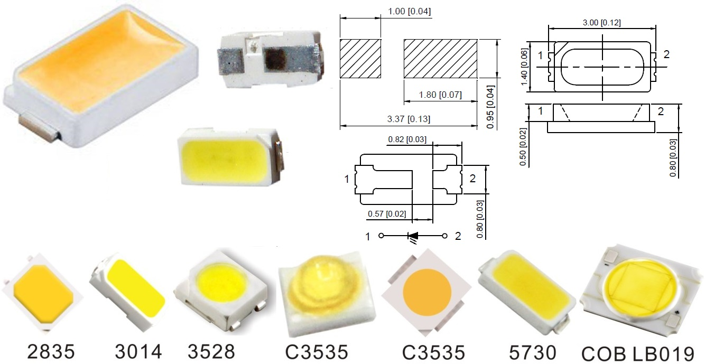

Las placas SMD se pueden clasificar de acuerdo con su tamaño utilizando 4 números, donde los 2 primeros representan al
largo en décimas de milímetro y los 2 siguientes al alto. Anteriormente, el SMD 5050 y 3528 eran los más comunes, pero
ahora podemos encontrar placas de hasta 1.1×0.4mm.

Los más usados
8520 -- 8.5 x 2.0
7020 -- 7.0 x 2.0
7014 -- 7.0 x 1.4
5736 -- 5.7 x 3.6
5733 -- 5.7 x 3.3
5730 -- 5.7 x 3.0
5630 -- 5.6 x 3.0
5050 -- 5.0 x 5.0
4014 -- 4.0 x 1.4
3535 -- 3.5 x 3.5
3528 -- 3.5 x 2.8
3258 -- 3.2 x 5.8
3030 -- 3.0 x 3.0
3020 -- 3.0 x 2.0
3014 -- 3.0 x 1.4
2835 -- 2.8 x 3.5
1206 -- 1.2 x 0.6
1104 -- 1.1 x 0.4